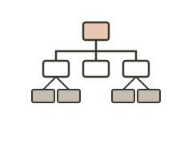

Information architecture
About
An information architecture diagram — a sitemap or content hierarchy — shows how the content and functionality of a site or app are organized, labeled, and connected. It lays out the structure of screens and pages, their grouping into sections, and the navigational paths between them. Good IA is grounded in research into how users categorize and look for things, typically through card sorting and tree testing, so that the structure matches users' mental models rather than the organization's internal silos. It is the blueprint of findability: the decisions made here shape whether people can locate what they need.
When to use
Use an IA diagram when structuring or restructuring a site or app, before navigation and wireframes are designed, and whenever you need to communicate or debate the overall structure of a product with a team.
When not to use
Do not treat an IA diagram as a substitute for content strategy or for validating labels — a tidy tree built on untested category names can still fail users. Always check the structure with card sorting or tree testing before committing to it.
References
Examples
Click any example to view full size and visit the original source.